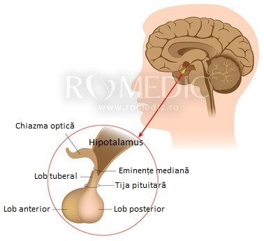
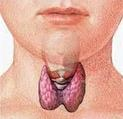
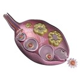
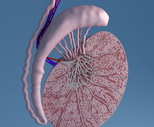

Sistemul Endocrin
Sistemul endocrin reprezintă totalitatea glandelor endocrine ale corpului. Glandele endocrine secretă hormoni în interiorul corpului, pentru a coordona activitatea organismului.
Hipofiza
Hipofiza este localizata la baza creierului, in saua turceasca a osului sfenoid.
Are forma si marimea unui bob de fasole cantarind aproximativ 0,5 grame. Hipofiza este legata de baza hipotalamusului prin tija pituitara.
Tija pituitara este formata din sistem port-hipofizar si tract hipotalamo-hipofizar.
Hipofiza secreta urmatori hormoni:
- Tirotropina
- Tirotropina controleaza cresterea si dezvoltarea tiroidei; stimuleaza secretia de hormoni tiroidieni.
- Corticotropina
- Corticotropina controleaza cresterea si dezvoltarea corticosuprarenalei; stimuleaza secretia de hormoni corticospinali.
- Hormonul luteinizat
- Hormonul luteinizat determina:
- La femei: ovulatia
- La barbati: secretia de hormoni sexuali masculini (Testosteron)
- Hormonul luteinizat determina:
- Hormonul foliculostimulant
- Hormonul foliculostimulant determina:
- La femei: ovogeneza (formarea ovulelor) si secretia de hormoni sexuali feminini (estrogeni)
- La barbati: spermatogeneza (formarea spermatozoizilor)
- Hormonul foliculostimulant determina:
- Hormonul somatotrop
- Stimuleaza sinteza de proteine
- Cresterea si dezvoltarea organismului
- are efect hiperglicemiant (creste glicemia)
- mobilizeaza acizii grasi din depozitele de lipide
- Prolactina
- Prolactina stimuleaza dezvoltarea glandelor mamare si mentine secretia lactata la femei.
- Hormonul antidiuretic
- Hormonul antidiuretic are ca actiune principala conservarea apei in organism.Creste tensiunea arteriala cand se afla in cantitati mari, si de aceea se mai numeste si vasopresina.Sub actiunea sa urina devine mai concentrata si volumul ei scade.
- Ocitocina
- Contractia musculaturii netede a uterului in timpul nasterii, favorizand expulzia fatului
- Eliminarea laptelui din glandele mamare
- Corticotropina
- Corticotropina controleaza cresterea si dezvoltarea corticosuprarenalei; stimuleaza secretia de hormoni corticospinali.
- Corticotropina
- Corticotropina controleaza cresterea si dezvoltarea corticosuprarenalei; stimuleaza secretia de hormoni corticospinali.
Tiroida
Tiroida este situata in partea anterioara a gatului, la baza laringelui; este formata din doi lobi laterali uniti printr-o parte mediana numita istm.
Tiroida produce doi hormoni: tiroxina si triiodotironina.
Hormonii tiroidieni au urmatoarele actiuni:
- Au rol in cresterea si dezvoltarea organismului, in special a sistemului nervos.
- Determina descompunerea proteinelor si cresterea eliminarilor de azot.
- Determina hiperglicemie
- Produc iritabilitate si neliniste
- Stimuleaza activitatea gonadelor (ovarelor si testiculelor)
Gonadele
Gonadele sunt glande mixte si sunt reprezentate de ovare (gonade feminine) si de testicule (gonade masculine)
Ovarele
Ovarele sunt organe pereche si sunt situate in cavitatea pelviana, pe de o parte si alta a uterului.
Ovarele sunt glande mixte, deoarece au atat functie exocrina cat si endocrina:
- Functia exocrina
- Functia exocrina a ovarului consta in formarea ovulelor (celule sexuale feminine sau gameti feminini) prin procesul numit ovogeneza.
- Functia endocrina
- Functia endocrina a ovarului consta in producerea de hormoni sexuali feminini reprezentati de hormonii estrogeni si progesteron
- Hormonii estrogeni
- stimuleaza proliferarea mucoasei si a musculaturii uterine
- stimuleaza dezvoltarea glandelor mamare
- stimuleaza dezvoltarea caracterelor sexuale secundare la femei (bazin lat si umeri ingusti, acumularea de tesut adipos pe coapse si in zona bazinului.etc)
- Progesteronul
- Hormonul progesteron actioneaza asupra mucoasei uterine determinand modificari care o pregatesc pentru fixarea celulei ou (zigot), proces denumit nidatie.
Testiculele
Testiculele sunt organe pereche situate intr-o punga tegumentara numita scrot.Testiculele sunt glande mixte, avand atat functie exocrina cat si endocrina:
- Functia exocrina
- Functia exocrina a testiculelor consta in formarea spermatozoizilor (celulelor sexuale masculine sau gameti masculini) prin procesul numit spermatogeneza
- Functia endocrina
- Functia endocrina a testiculelor consta in producerea de hormoni sexuali masculini numiti hormoni androgeni Hormonii androgeni sunt reprezentati de testosteron.
- Testosteronul
- Stimuleaza cresterea si dezvoltarea organelor genitale masculine
- Determina dezvoltarea masei musculare
- Asigura dezvoltarea si mentinerea caracterelor sexuale secundare la barbati (bazin ingust si umeri lati, musculatura dezvoltata, pilozitate crescuta, acumulare de tesut adipos in zona bazinului, ingrosarea vocii.etc)